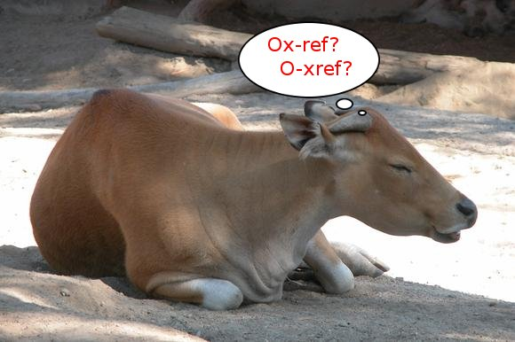

This is the main page of the Oxref project hosted at GitHub.com.
The project's repository can be reached at https://github.com/fbb-git/oxref.
The five most recent releases are (to obtain, either check out a release
by its tag or download the matching .zip or .tar.gz from
https://github.com/fbb-git/oxref/releases or direct from its
release page):
Additional information about oxref:
Enjoy Oxref !
Contact the author through his e-mail address